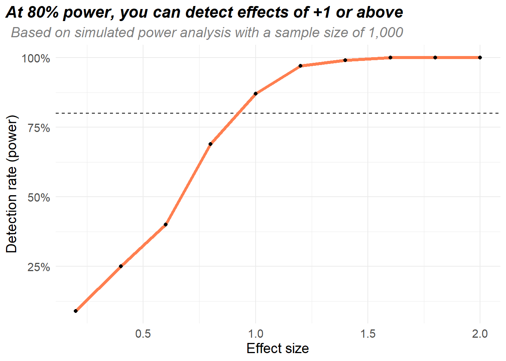
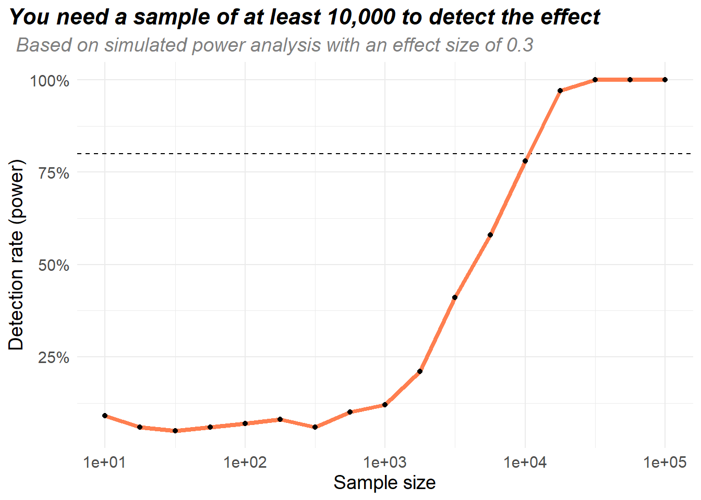
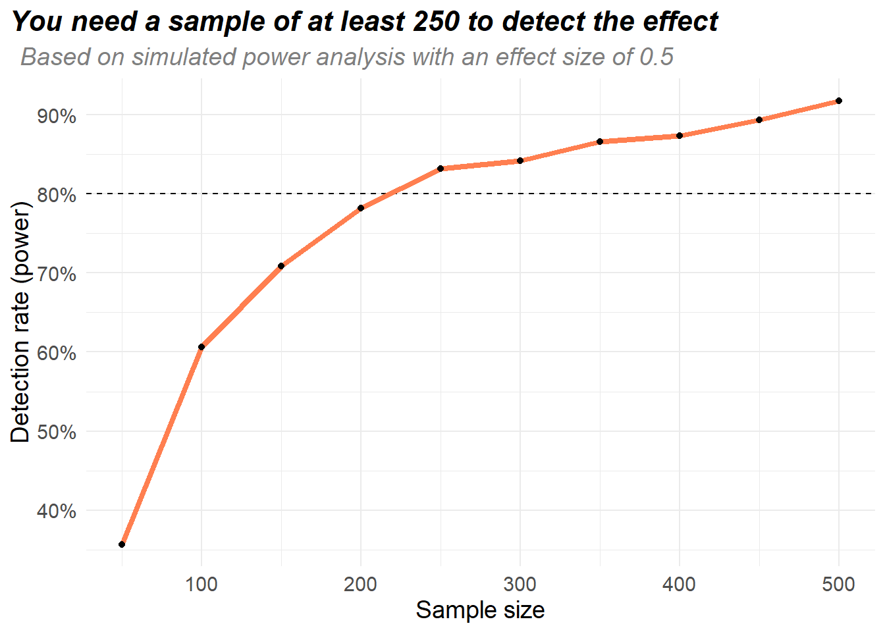

experiment_sim = function(effect, sample_size){
# Simulate experimental data
X = runif(sample_size, 0, 1) # X is uniformly distributed between 0 & 1
Y = effect * X + rnorm(sample_size, mean = 0, sd = 3) # Y is related to X
# Run the analysis & get it into a tidy format
mod = lm(Y ~ X)
mod = broom::tidy(mod)
# Check if the X term is significant
sig = mod$p.value[[2]] < 0.05
return(sig)
}Power analysis has always seemed a bit mysterious to me. Some experimental designs have nice neat formulas you can use to figure out how large of a sample is needed for the experiment. But what do you do if there’s no formula for your specific design? There’s a bunch of sample size calculators like G*Power, but they don’t cover every possible design, and it’s not incredibly clear how these tools work.
The alternative to fancy formulas & tools is to simulate your experiment. The rough idea is you simulate your experiment a bunch of times, then check to see how often you detect an effect. This reduces the amount of maths and increases the types of designs you can do power analysis with, but it increases the amount of coding you need to do - which feels like a good trade!
Why do power analysis
Power analysis is part of experimental design - the stuff you do before running an experiment. Very broadly, there’s a bunch of things you might be interested in when you do an experiment:
- The size of an effect (if you do a treatment X, how much does an outcome Y change?)
- The variation in treatment X
- The left over variation in Y (so something like \(R^2\) from a model \(Y \sim X\))
- Statistical precision (if you run this experiment, how likely are you to detect an effect?)
- The sample size needed before you run an experiment
If you fix 4 of these 5 things, power analysis will tell you about the fifth thing. For example if you are doing an experiment on 100 people, you already know the variation in X & Y, and you want at least a 80% chance of detecting an effect, power analysis will tell you the minimum detectable effect - the smallest effect size you’ll be able to measure with the experiment.
Or imagine if you have a rough idea of the effect size (for example from past experience or lit reviews), you know the variation in X & Y, and you want an 80% chance of detecting an effect, then power analysis will tell you the smallest sample size required.
This is why power analysis is such an important part of the design - if the analysis says you need at least a sample of 1,000 people but you only have 100, there’s not much point in doing the experiment!
Simulating
The idea behind simulating is quite straightforward - you just simulate the experiment over & over, and see how many times you’re able to detect an effect. Here’s an example:
I think \(Y\) is related to \(X\), but I don’t know how large the effect is. \(X\) is uniformly distributed between 0 & 1 in the population.
I’ve got a sample of 1,000 people and - if an effect exists - I want to correctly detect it at least 80% of the time. How large does the effect size need to be?
All we’re going to do is simulate the data over and over, fit a linear model & see if the \(X\) coefficient is significant. First of all lets make a function to simulate the experiment:
For any given effect size, we can use this function to figure out how many times the experiment would detect the effect. For example, if the effect size was 0.2, then the experiment would detect the result about 12.6% of the time:
# Run the experiment 500 times with an effect size of 0.2
set.seed(19532)
n_experiment = 500
sig = vector('logical', n_experiment)
for (i in 1:n_experiment){
sig[[i]] = experiment_sim(0.2, 1000)
}
mean(sig)So to figure out how large the effect size needs to be in order for the experiment to detect it 80% of the time, we just have to try a bunch of different effect sizes (I’ve reduced the number of experiments from 500 to 100 to speed things up):
set.seed(65439)
effect_sizes = seq(0.2, 2, by = 0.2)
pct_detect = vector('double', length(effect_sizes))
n_experiment = 100
for (j in seq_along(effect_sizes)){
# Repeatedly run the experiment with the effect size & count the number of times
# the experiment would detect the effect
sig = vector('logical', n_experiment)
for (i in 1:n_experiment){
sig[[i]] = experiment_sim(effect_sizes[[j]], 1000)
}
pct_detect[[j]] = mean(sig)
}
This experiment would be able to consistently detect effect sizes around 1 or larger. If you don’t think the effect is going to be that large, don’t do the experiment! You’ll need to improve the design somehow - increase the sample size, reduce variation in X or Y, use more accurate analysis steps, …
If someone asks a different question, it’s very easy to flip the code around to answer it. For example imagine if someone asks you about sample sizes:
I think \(Y\) is related to \(X\), I’ve read loads of papers and I think the effect size is probably 0.3ish. \(X\) is uniformly distributed between 0 & 1 in the population.
I want to do an experiment to figure out the effect size, how many people do I need to include in my experiment?
Here’s the code to answer the question - look how similar it is! In the last bit of code we fixed the sample size & varied the effect sizes, now we fix the effect size & vary the sample sizes:
set.seed(65439)
sample_sizes = 10^seq(1, 5, by = 0.25)
pct_detect = vector('double', length(sample_sizes))
n_experiment = 100
for (j in seq_along(sample_sizes)){
# Repeatedly run the experiment with the effect size & count the number of times
# the experiment would detect the effect
sig = vector('logical', n_experiment)
for (i in 1:n_experiment){
sig[[i]] = experiment_sim(0.3, sample_sizes[[j]])
}
pct_detect[[j]] = mean(sig)
}
A more complex example
The examples so far haven’t been massively difficult, they’re the sort of problems you can use calculators like G*Power on. The cool thing about simulations is you can use them to analyse any sort of experimental setup, no matter how weird looking it is.
Here’s a bit of a tricky example:
You’ve got 1,000 people who are split into 10 equally sized groups. Treatment is assigned at the group level (so either everyone in a group gets the treatment, or no one in the group gets the treatment). Each person has a \(W \sim \text{Unif}(0, 1)\), and treatment is given based on the average \(W\) within the group.
You think the true effect is somewhere around 0.5, how big of a sample do you need to be able to detect the effect 80% of the time?
There’s 2 weird things going on here - most tools for power analysis assume treatment is done at the person level, but here the treatment is assigned at group level. Also there’s a confounder \(W\) we need to control for in our analysis, we can’t just do a simple regression of \(Y \sim X\). Fortunately none of this matters for simulation! We just follow the same process as before: Simulate the experiment a bunch of times with a bunch of different sample sizes and see how often the effect is detected:
experiment_sim = function(effect, sample_size){
### Generate the data - need to be careful with the group treatment
df = data.frame(W = runif(sample_size),
group = sample(1:10, sample_size, replace = T))
# Figure out which groups get treated. Say each group gets treated
# with probability 0.5 + mean(W) / 10. We can check this using
# the fact that X > runif() occurs with probability X, for X between 0 & 1
df_treat = df %>%
group_by(group) %>%
summarise(mean_w = mean(W)) %>%
mutate(treated = 0.5 + mean_w / 10 > runif(nrow(.)))
# Treatment depends on the group you're in, and your value of W
df = df %>%
left_join(df_treat, by = 'group') %>%
mutate(Y = effect * treated + W + group/10 + rnorm(sample_size))
### Do the analysis
mod = lm(Y ~ treated + W, data = df)
mod = broom::tidy(mod)
sig = mod$p.value[[2]] < 0.05
return(sig)
}
# Run the experiment a bunch of times, varying the sample size
# Exactly the same code as above
set.seed(592)
n_experiment = 500
sample_sizes = seq(50, 500, by = 50)
pct_detect = vector('double', length(sample_sizes))
for (j in seq_along(sample_sizes)){
sig = vector('logical', n_experiment)
for (i in 1:n_experiment){
sig[[i]] = experiment_sim(0.5, sample_sizes[[j]])
}
pct_detect[[j]] = mean(sig, na.rm = T)
}
Turns out that an effect size of 1 in this setup is very large, so we don’t need a lot of data to be able to detect the effect.
Conclusion
So that’s it! Using simulation, there’s only 2 steps to any power analysis:
- Write a function to simulate your experiment - the function needs to generate the data from the experiment, and run the analysis on the simulated data
- Run the function lots of times, varying the parameter you’re interested in